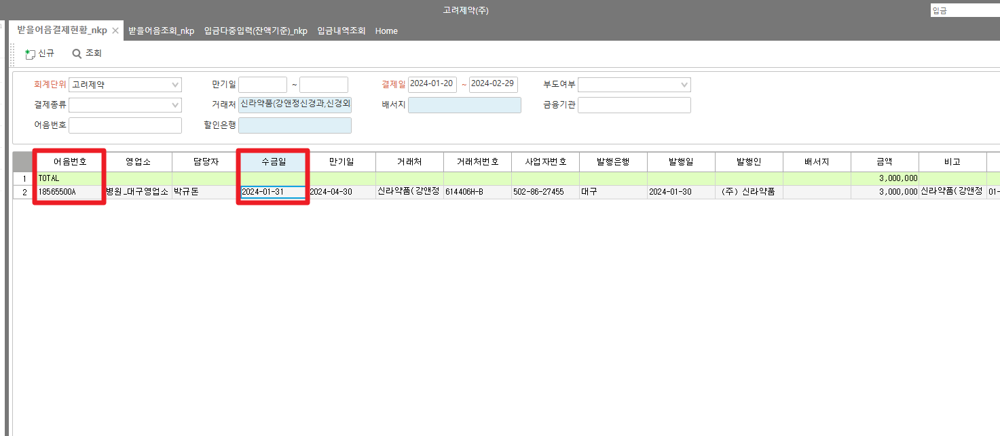
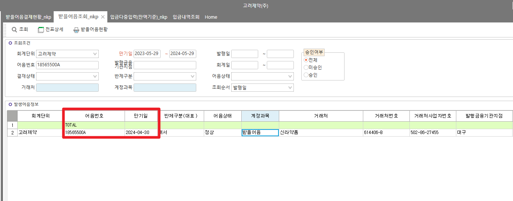
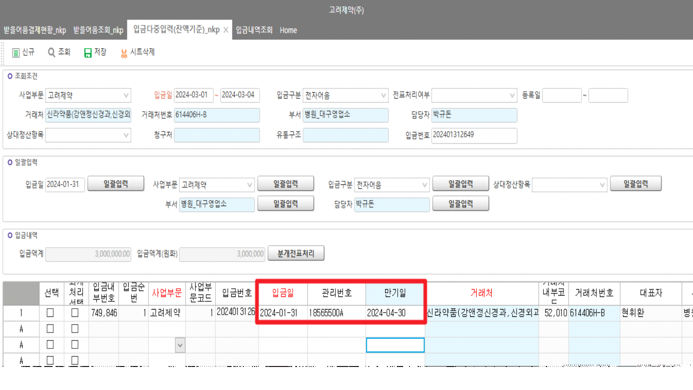

받을어음결제현황_nkp - _TSLReceiptDesc
SELECT TOP 100
A.DueDate ,
A.DrawDate,
A.BillNo,
A.DueDate,
D.ReceiptDate
,D.ReceiptDate
,D.ReceiptNo
,A.*
FROM _TACBill AS A WITH(NOLOCK)
LEFT OUTER JOIN _TSLReceiptDesc AS C WITH(NOLOCK) ON A.CompanySeq = C.CompanySeq -- 입금내역
AND A.BillNo = C.AdminNo
AND A.DueDate = C.DueDate
LEFT OUTER JOIN _TSLReceipt AS D WITH(NOLOCK) ON C.CompanySeq = D.CompanySeq
AND C.ReceiptSeq = D.ReceiptSeq
--WHERE D.ReceiptNo ='202402290810'
WHERE A.BillNo = '18565500A'
ORDER BY D.ReceiptDate DESC
[받을어음결제현황_nkp] 화면의 ' 수금일' 컬럼의 경우
해당 어음 건에 연결된 입금 건의 입금일을 가져오고 있습니다.
| * 어음 | * 입금 |
|---|---|
| 어음번호 | 관리번호 |
| 만기일 | 만기일 |
확인 부탁 드립니다.
감사합니다.



출처: \<http://61.250.183.6:8100/Page/Open/55299/100101/0/18820244>